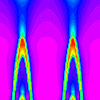
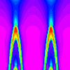
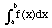

Signs for technical/specialized vocabulary
David Bar-Tzur
Links updated monthly with the help of LinkAlarm.
 

Icosahedron stellations1; Ramsay fold interference patterns.2
EXPLANATION OF THE GLOSSING SYSTEM
(to understand how I describe the signs in this dictionary).
For content knowledge of how to use the physics terms in context, see Guided tutorial in physics for interpreters.
For negotiating and developing temporary signs, see Preparation and sign negotiation
For vocabulary lists to determine helpful signs for a specific discipline, see Vocabulary lists by topic.
- I-beam (computers)
- Hold [bC] behind [1] to make "I" and circle slightly.
- -ible (suffix)
- (1) CAN. (1) CAN+.
- ice breaker
- I-C-E BREAK.
- ice hockey
- (1) [X], PO up, FO away, scrapes > NDS against palm of [B], PO up, FO away. (2) I-C-E + [X], PO up, FO away, scrapes > NDS against palm of [B], PO up, FO away.
- Iceland
- [A dot], PO > signer, touches thumbtip to side of mouth and runs down chin. To see the reference source for the sign(s) for this country or to look up other countries in the same geographical area, see Indigenous signs for countries. To find signs for cities within this country (some have no entries) see Indigenous signs for cities.
- ice skating
- (1) (2h)[X], POs up, FOs away, move alt. to and fro like the natural movement of the feet. (2) I-C-E + (2h)[X], POs up, FOs away, move alt. to and fro like the natural movement of the feet.
- icon (Orthodox Church)
- HOLY PICTURE. There are many signs for "holy", one of which is H-CLEAN. For an animated gif of this sign, see Animated dictionary of religious signs - Deaf Missions: Holy.
- ICU (intensive care unit)
- I-C-U.
- 'Id-al-Adha (عيد الأضحى) - Celebration of Ibrahim not needing to sacrifice his son, Ismail
- [5^], PO up, descends down chest and closes to a [O^] + [B], PO down, FO away, slides over the top of [S], PO > DS, FO away. For a film of this Saudi sign, click on Eid Al-Adha.
- 'Id al-Fitr (عيد الفطر) - Breaking the fast of Ramadan
- [5^], PO up, descends down chest and closes to a [O^] + [Bb] wipes FT across mouth. For a film of this Saudi sign, click on Eid Al-Fitr.
- ideal gas
- PERFECT G-A-S.
- idempotent
- I-D-E-M-P-O-T.
- identification
- ~ (documents)
- I-D.
- ~ (of objects)
- IDENTIFY"each".
- ~ (with a person)
- FEEL + (2h)[F], interlink circles and swing between the person and what s/he identifies with.
- identifier (computers)
- I-D.
- identify
- ~ (what something or someone is or should be labeled)
- (1) [H], PO > NDS, descends and crosses FT of [H], PO > DS, FO away, both hands descend. (2) [I], PO > NDS, descends and crosses FT of [H], PO > DS, FO away, both hands descend.
- ~ (with something or someone)
- FEEL + (2h)[F], interlink circles and swing between the person and what s/he identifies with.
- identity
- an ~ (abstract algebra)
- "E".
- an ~ (permutation)
- I-D-E-N-T-I-T-Y.
- (Math, sometimes used to mean "one", as in "which equals ~")
- ONE.
- (a person's) ~
- (1) [I] strikes thumbside against palm of [B], PO > DS, FO up. (2) [I] strikes thumbside against palm of [B], PO > DS, FO up, then DH changes to [D] and strikes similarly.
- ideogram (Chinese character)
- (2h)[1] cross at midfinger and wg while moving together > DS or down.
- idiom
- (2h)[I], POs away, FOs up, hands twist into (2h)[V:], POs ><, FOs away, like the final position of QUOTE.
- idol
- (1) SHAPE. (2) I-SHAPE.
- if and only if (Logic, Math proofs)
- I-F-F.
- ignition
- ~ (Automotive)
- [bX] twists at position of ignition switch + (1h)BURN.
- ~ (furnace)
- NDH [1] touches little finger side of [S], PO up and DH opens while wiggling to [5] like a kindled flame.
- illegal
- DH [1] and NDH [B], POs ><, FOs up, strike palms and separate forcefully.
- illegal player
- (1) NOT ALLOW PLAYER. (2) FORBID PLAYER. (3) NOT ALRIGHT PLAYER.
- illusion
- TRICK-me , PERSPECTIVE SCREWED-UP.
- illustration
- FT of [I] draws on palm. For a QuickTime movie of this sign, see ASL browser - illustration.
- im- (prefix, negation)
- NOT.
- image
- ~ (general)
- I-PICTURE.
- ~ (graven)
- (1) SHAPE. (2) I-SHAPE.
- imaginary (general and for ~ numbers)
- IMAGINE.
- Imam, Imamah
- ISLAM LEADER.
- Iman (إيمان) Faith or belief in the Oneness of God (Allah) and the finality of the prophethood of Muhammad
- Touch heart with FT of [B^] + (2h)[B], DH PO > NDS, FO away, slides directly away on upturned palm of NDH. (< HEART STRAIGHT/RIGHTEOUS)
- Imani
- (1) THINK~TRUST. TRUST = (2h)[5], DH above NDH, POs > signer, close to (2h)[S] as if grasping a rope that is attached to the stomach. (2) THINK~(2h)F-TRUST. For an animated gif of this sign, see Animated dictionary of religious signs - Deaf Missions: Faith.
- imitate
- COPY.
- Immaculate Conception
- (1) I-CLEAN BORN. (2) INNOCENT BORN. (3) MARY BORN INNOCENT.
- immanence
- GOD CLOSE"mm".
- Immanuel
- GOD WITH US.
- immature
- to act ~ (childish)
- (1) Tip of [I] taps nose. (2) [M], PO away, travels down palm of [B], PO away.
- to be ~ (biologically)
- ~ ~ ~ (if animal can stand upright)
- FULL GROW-UP, NOT-YET.
- ~ ~ ~ (if animal cannot stand upright)
- FULL GROW-HORIZONTALY, NOT-YET.
- immersion, total
- (2h)[A dot], POs ><, FOs away, both hands are tipped to one side so that the thumbs point > NDS, then > upwards.
- immigrant, immigration
- (1) [4], PO towards, draws a wavy line across the face, like the cancellation marks on a green card. To see a video of this sign, go to "immigrant" ASL American Sign Language. (2) [4], PO > NDS, FO up, nods at wrist multiple times moving away from signer, with NDH [B], PO down, FO away, held over it, as if many people were entering a new area.
- immigrate
- ENTER. For a QuickTime movie of this sign, see ASL browser - immigrate.
- immortality
- LIVE FOREVER.
- immune, immunity
- RESIST+, that is, [S] arm is raised horizontally to fend off something and moves forward slightly twice. For a QuickTime movie of this sign, see ASL browser - immune. (2) BODY PREVENT INFECTION.
- immune system
- (1) BODY INSIDE-SELF PROTECT, SICK ENTER CAN'T. (2) I-PREVENT SYSTEM.
- immuno-suppressed
- BODY PROTECT, BREAK-DOWN, where the last sign is (2h)[5:] interlaced, POs ><, FTs move down while remaining interlaced so that the PO becomes down. For a QuickTime movie of this sign, see ASL browser - break down.
- impacted
- Thumb of [A dot] is inserted up the cavity of [A], FOs away with force and "can't" be removed.
- impairment
- [I], PO > NDS, FO up, taps between the thumb and index finger of [B], PO down, FO > DS.
- impasse
- (2h)[V:], POs > signer, FOs ><, interlace fingers once with force.
- impeach
- FT of [B], FO down, slide along palm of [B], FO away. For a QuickTime movie of this sign, see ASL browser - impeach.
- impeccability
- JESUS SIN, IMPOSSIBLE.
- impedance
- ~
- "Z".
- input ~ (Zin)
- Z I-N"subscripted".
- output ~ (Zo)
- Z O"subscripted".
- primary ~ (Zp)
- Z P"subscripted".
- secondary ~ (Zs)
- Z S"subscripted".
- total ~ (Zt)
- Z T"subscripted".
- imperialism
- GOVERNMENT REALLY-WANT TAKE-HOLD-OF"each" OTHER COUNTRY, where the third sign is (2h)[5:] rush down, close to (2h)[S] traveling from left to right with tl. .
- implant a cochlear implant (v)
- [V:] strikes FT against skin behind ear in a large movement compared to the noun.
- implement, implementation
- ~ (computers)
- I-MAKE.
- ~ (general)
- GO-AHEAD START.
- implicit
- (1) SUBTLE, where the second sign is DH [B], PO down, moves > NDS across NDH [B], PO up, while touching it. (2) DIRECT, DON'T-MEAN-TO-SAY. (3) [1] starts to move towards the palm of [B], PO away, FO up, but instead goes around the thumb and touches the backhand.
- implied powers (powers not clearly defined in the Constitution)
- POWER NOT DIRECT BUT INTEND, where the last sign is the same as MEAN.
- imply
- TALK + any of the variants for "implicit" listed above.
- import
- ~ (business)
- The sign SELL moves FTs towards signer rather than away. For a QuickTime movie of this sign, see ASL browser - import.
- ~ (computers)
- (2h)[V], POs ><, FOs towards the thing being import, FTs curl and place the thing imported where it will go and FTs are straightened again.
- impostor
- FALSE NAME. For a QuickTime movie of this sign, see ASL browser - impostor.
- impotence, impotent
- ~ (powerless)
- POWER NONE.
- ~ (sexual)
- ERECTION (see entry), CAN'T.
- impregnate
- (2h)5, FOs >< moves towards each other from the sides of the stomach and interlace FTs. Technically speaking the second sign means to become pregnant, but you will often see it used to mean to be pregnant.
- imprison
- Backhand of [4] strikes against [5], PO towards, FO up, with a large movement from behind. For a QuickTime movie of this sign, see ASL browser - imprison.
- improv
- I-business.
- improvise
- I-business.
- impulse
- ~ (biology)
- DH [S] flicks fingertip once at tip of NDH [1], PO > DS.
- ~ (physics)
- HIT*.
- ~ (psychological)
- LAST~MINUTE + (2h)[1] point to respective ears and then open to (2h)[5], POs > back, and move forward.
- impure
- FILTHY, that is, [S] is held under chin and opens explosively into a [5] with an appropriately negative facial expression.
- imputation (Lutheran)
- APPLY.
- imputed (cost)
- CALCULATE THEREABOUTS.
- im yirtza HaShem
- IF GOD WILLING.
- in (element of a set)
- NDH [W], FO > DS.
- in- (prefix, negation)
- NOT.
- inauguration
- (2h)[B], NDH held on imaginary Bible and DH held up in oath. For a QuickTime movie of this sign, see ASL browser - inauguration.
- incarnate, incarnation
- (1) (GOD) BECOME BODY. For an animated gif of this sign, see Animated dictionary of religious signs - Deaf Missions: Incarnate. (2) GOD BECOME MAN. (3) GOD BECOME HUMAN. (4)(2h)[I], POs away, cross arms at wrists and move forward. For an animated gif of this sign, see Animated dictionary of religious signs - Deaf Missions: Incarnate.
- in case of
- SUPPOSE. For a QuickTime movie of this sign, see ASL browser - in case of.
- incense
- (1) (2h)[S], POs > signer, DH is held high and immobile and NDH swings back and forth as if handling censer (incense holder). (2) [I] taps tip of nose 2x with FT. Also means "immature", best avoided. (3) (2h)[I], POs > signer, NDFO up is held still while DH, FO down, moves upwards in a spiral. (4) NDH [1], PO > signer, FO up, is held somewhat low, DH produces SMELL, then [5^], PO down, starts at end of incense stick and circles upwards like smoke. [(1) < the censer. (2) < the fragrance. (3) < the rising smoke. (4) < fragrance and rising smoke.]
- incentive
- (2h)[B], POs away, FOs down, hands are held low and circle repeatedly as if pushing something forward.
- incest
- I-N-C-E-S-T.
- inch
- (1) I-N. (2) [V] descends while FT bend to [V:] as in 1". (3) MEASURE.
- inch per second
- I-N, then hand descends and signs S.
- incidence (wave mechanics)
- ~
- ARRIVE.
- plane of ~
- NDH [B] PO down, FO > DS and DH [1] is reflected off of it. Then DH [B], PO towards and FT > NDS, saw at NDH to show the plane of incidence.
- incident (wave mechanics)
- ~
- ARRIVE.
- ~ ray
- R-A-Y, 1-CL'moves from backhand of NDH [B] as if reflected off of it.'
- in-circuit emulation
- I-C-E.
- inciting incident
- CAUSE HAPPEN.
- inclination of orbit to ecliptic
- COMPARE (<) EARTH ORBIT, (>) ITS ORBIT, HOW-MUCH ANGLE TILT-PLANE. ORBIT is [1^], PO down, FO away, circles NDH [A], PO > DS, FO away, from above.
- inclusion
- INCLUDE (2h)#ALL.
- inclusivism
- PEOPLE BELIEVE DIFFERENT"each", RESPECT"all".
- income
- ~
- MONEY + [C], PO > signer, FO > NDS, closes to [S], as it moves across [B], PO up, towards signer and then upwards.
- ~ statement
- INCOME LIST. For a QuickTime movie of "income", see ASL browser - income.
- incomprehensible
- THINK + DH [1] pierces between the fingers of NDH [5], PO > signer, FO up + CAN'T.
- increase
- ~
- (2h)[U], NDHPO down, DHPO up, DH pronates and crosses FT of NDH with its own while both rise. For a QuickTime movie of this sign, see ASL browser - increase.
- ~ing (function)
- (2h)[U], NDHPO down, DHPO up, FOs diagonal as if they might cross, DH pronates while both rise in steps.
- ~ monotonically
- (2h)[U], NDHPO down, DHPO up, FOs diagonal as if they might cross, DH pronates while both rise in steps + DECREASE NEVER.
- ~ without bounds
- (2h)[U], NDHPO down, DHPO up, FOs diagonal as if they might cross, DH pronates while while both rise in steps + STOP NEVER.
- increment
- (2h)[U], NDHPO down, DHPO up, DH pronates and crosses FT of NDH with its own. For a QuickTime movie of this sign, see ASL browser - increase.
- incremental analysis (business)
- INCREASE++, ANALYZE. The first sign makes very small increases repeatedly with the lips pursed to show incrementality. For a QuickTime movie of INCREASE++, see ASL browser - accumulate.
- incubation period
- ~ (baby)
- TIME-PERIOD BABY GROW INSIDE-BODY MOTHER.
- ~ (disease)
- SICK ACQUIRE-SICKNESS, OPPOSITE TEST CAN, where the second sign is DH 5, PO > signer, FO away, moves towards NDH and touches it with thumbside of hand while closing to an [8].
- incurable
- BECOME-HEALTHY, CAN'T. For a QuickTime movie of this sign, see ASL browser - incurable.
- indecent liberties
- WRONG* TOUCH, with malevolent facial expression.A legal term that means taking advantage of someone's age, physical disability, or state of mind to touch them sexually; a form of sexual abuse.
- indefinite integral
- [I], PO down, travels down in an arc like the s-shape of an integral sign () + LIMIT HAVE-NONE.
- independent variable
- (1) INDEPENDENT V-VARY'small movement'. (2) WORD/TERM + (2h)[Bb], POs down, FOs away, hands are held side by side with NDH held still while DH moves away in a wavy pattern + INDEPENDENT.
- index
- ~ (Abstract Algebra)
- I-N-X.
- ~ (list)
- (1) LIST. (2) I-N-D-E-X.
- ~ (to point)
- POINT (2h)alt.POINT-TO"each".
- indexed
- INDEX HAVE.
- index of refraction
- "N".
- India
- (1) [I] touches FT to center of forehead and twists 2x. (< mark on forehead of married women in India.) (2) [A dot] touches FT to center of forehead. (< mark on forehead of married women in India.) To see the reference source for the sign(s) for this country or to look up other countries in the same geographical area, see Indigenous signs for countries. To find signs for cities within this country (some have no entries) see Indigenous signs for cities.
- Indian
- ~ (from India)
- (1) [I] touches FT to center of forehead and twists 2x + AGENT. (2) [A dot] touches FT to center of forehead + AGENT.
- ~ (Native American)
- (1) [F] touches FT to cheek and face several times while ascending slightly. For a QuickTime movie of this sign, see ASL browser - Native American. (2) (2h)[B], PO down, FT of DH rubs gently back and forth on backhand of NDH. Borrowed from Native American Sign Language.
- indicator (chemistry)
- I-SHOW CHEMICAL.
- indictment
- G-R-A-N-D JURY DECIDE (<) BLAME, (>) NOT BLAME, WHICH.
- indigenous
- [B] moves it palm multiple times towards the space of the place that this is indigenous to, showing possession.
- indirectly proportional
- STRAIGHT PROPORTIONAL, NOT.
- indium
- I-N. For more information on this and other elements, see The elements. And for fun, see Elements by Tom Lehrer. To see this song with captions, go to The Elements song by Tom Lehrer.
- Individual Plan of Employment
- I-P-E.
- indoctrinate
- ~ (positive perspective)
- TEACH. For a QuickTime movie of this sign, see ASL browser - indoctrinate.
- ~ (negative perspective)
- (1) BRAIN~WASH, where the second part looks like WASH-DISHES.
(2) HYPNOTIZE-SELF ENRAPTURED, that is, (2h)[5], point FTs at eyes and wiggle + (2h)[5], point FTs at eyes and move towards them while changing to (2h)[S]. For a QuickTime movie of this sign, see ASL browser - induce.
- Indonesia
- (1) [H dot], PO > signer, FO > NDS, moves > DS while wiggling FTs but not thumb. (2) [H], PO towards, FO > NDS, waves at wrist, closer to signer and further from signer, while moving > DS. For a QuickTime movie of this sign, see ASL browser - Indonesia. To see the reference source for the sign(s) for this country or to look up other countries in the same geographical area, see Indigenous signs for countries. To find signs for cities within this country (some have no entries) see Indigenous signs for cities.
- induce
- ~ (animate object)
- INFLUENCE.
- ~ (inanimate object)
- FORCE.
- induced
- ~ (animate object)
- INFLUENCE-self.
- ~ (inanimate object)
- FORCE-self.
- inductance
- ~
- "L".
- ~-capacitance
- L-C.
- ~-capacitance-resistance
- L-C-R.
- mutual ~ (LM)
- L M"subscripted".
- total ~ (LT)
- L T"subscripted".
- inductive reactance (XL)
- X L"subscripted".
- inductive voltage (VL)
- V L"subscripted".
- inductor
- ~
- (2h)[L], POs ><, FOs up, tap at wrists twice.
- number of turns in an ~
- "N".
- indulgence (forgiveness)
- Middle finger of DH [P] traces a circle in the palm of NDH [B]. (< the practice of selling indulgences in the 16th century to expiate the souls in Purgatory who had died in a state of grace.)
- indulgence (enjoyment)
- PLEASURE, HEAVY-INTO.
- industry
- I-business. For a QuickTime movie of this sign, see ASL browser - industry.
- industry standard architecture
- I-S-A.
- inelastic collision
- COLLIDE ELASTIC, NOT.
- inequality (Math)
- NOT EQUAL (1x) SENTENCE.
- inerrant
- WRONG, IMPOSSIBLE.
- inertia
- (1) I-N-E-R-T-I-A. (2) RESIST CHANGE.
- infallibility
- NO CONCEPT WRONG.
- infamous
- (2h)[1] point to respective sides of mouth and then are brought out so that they end up POs > signer, FOs up with a negative expression on the face.
- infancy
- (1) BABY TIME-PERIOD, where the second sign is T-HOUR. (2) BABY BABY-GROW, where the second sign is (2h)[B], POs ><, FOs away, hand slowly separate further to show a baby growing as it is lying down.
- infect
- (2h)[S], FO away, DH is held over NDH, then both move away from body while opening + "I".
- infection
- (1) "I". For a QuickTime movie of this sign, see ASL browser - infection. (2) "I" SICK.
- infectious
- (1) SICK, DH 5, PO > signer, FO away, moves towards NDH and touches it with thumbside of hand while closing to an [8] + CAN. (2) SICK, SPREAD CAN. (3) "I" SPREAD, SICK. (3) SICK, GIVE"each" CAN.
- infer, inference
- MEANING + from the final position of the previous sign, pronate the NDH (PO away) and bring the index finger around and touch the backhand of the NDH.
- inferior (anatomy)
- (2h)[A], POs <, FOs away, DH starts above NDH and moves around and then stops below it.
- inferior (quality)
- (1) [S], PO > NDS, FO away, is held over NDH [B], PO down, FO > DS, and moves around NDH by moving towards signer and then placing itself below the NDH. (2) [I], PO away, FO up, circles under NDH [B], PO down, FO > DS.
- inferior to superior
- "I" TO "S".
- Inferno
- HELL FIRE.
- infertility
- PREGNANT, CAN'T.
- infest
- IN SPREAD. For a QuickTime movie of this sign, see ASL browser - infest.
- infiltration (Heating and Cooling)
- NDH [5], PO > DS, FO away, is held at its side while DH [5], FO > DS, moves from its side > NDH fluttering FT and finally interlaces its fingers with NDH.
- infinite
- (1) WITHOUT STOP. (2) WITHOUT END. (3) FOREVER. (4)LIMIT NONE.
- infinitely many
- _________rhq
HOW-MANY, CONTINUE WITHOUT LIMIT.
- infinite series (Riemann sum)
- Draw a uppercase sigma (
 ) in the air.
) in the air.
- infinitesimally short
- SHORT* AWFUL"hu".
- infinitive
- I-N-F.
- infinity
- 1outline-CL'draw sideways figure-eight'.
- infirmary
- I-HOSPITAL. For a QuickTime movie of this sign, see ASL browser - infirmary.
- inflammation
- RED + [O^], FO > NDS, touches backhand of NDH [B], PO down, FOs > DS, and moves up it while opening to [5:]. If area of inflammation is known, start sign from this area.
- inflation
- COST INCREASE++ traveling up.
- inflationary universe
- UNIVERSE YOUNG, EXPAND"pow", where the last sign is DH [S] is held inside of NDH [C], FOs away. Hands separate while opening into (2h)[5:] and cheeks are puffed out.
- inflator module (air bag)
- (2h)[S] are held at mouth, NDH against mouth, DH against NDH, and hands open to (2h)[5:] while separating (like BALLOON) + M-O-D-U-L-E.
- inflection point
- I-N-F-L-E-C-T-I-O-N POINT.
- influence
- [O^], PO down, brushes against the back of [B], PO down, while opening into a [5] and moving away.
- informant
- INFORM PERSON.
- information
- INFORM+.
- information systems network
- I-S-N.
- information technology
- I-T.
- (police) informer
- The index finger flicks out to the side of the mouth to show words coming out the side of the mouth as if telling a secret about someone. For a QuickTime movie of this sign, see ASL browser - rat.
- infraction (Sports)
- BREAK RULE+.
- infrared
- ~
- I-R.
- ~-emitting diode
- I-R-E-D.
- infrared cirrus
- I-R C-I-R-R-U-S.
- infusion
- Looks like PREGNANT, but DH wg until it joins with NDH.
- -ing (suffix)
- Use the "regular" inflection where the sign is repeated several times.
- In God's presence
- (2h)[B], POs ><, FOs up, NDH is held with back of hand facing God, DH is held close to body, and palms approach one another (APPROACH-God).
- inhale/exhale
- ~ (through mouth)
- (2h)[O^] thumbs are held at sides of mouth and the fingers spread out to (2h)[5] for exhalation and close again (thumbs always at sides of mouth) for inhalation.
- ~ (through nose)
- (1) (2h)[O^] thumbs are held at nostrils and the fingers spread out to (2h)[5] for exhalation and close again (thumbs always at nostrils) for inhalation. (2) Both hands [5], PO towards body move in and out from chest as if imitating breathing. For a QuickTime movie of this sign, see ASL browser - breath.
- inherit
- (1) The base sign GIVE moves forward twice in arcs. For a QuickTime movie of this sign, see ASL browser - inherit. (2) (2h)[5], POs ><, FOs away, DH above NDH, both hands moves towards signer while hands curl fingers. To see a series of stills of this sign, go to "inherit" ASL American Sign Language.
- inheritance
- (GENE) CHARACTERISTIC PASS-DOWN.
- inhibition
- INSIDE-SELF RESIST.
- iniquity
- SIN AWFUL*.
- initial (position, velocity, or acceleration)
- VERY-FIRST, that is, DH [1] strikes thumb of [A dot], PO > DS, FO away.
- initial condition (Chemistry, DIfferential equations)
- VERY-FIRST C-SITUATION, where the first sign is DH [1] strikes thumb of [A dot], PO > DS, FO away.
- initialization, initialize
- SET-UP.
- initial program load
- I-P-L.
- initiate
- ~ (an action)
- RESPONSIBLE GO-AHEAD START.
- ~ (a person)
- ~ (into a club)
- TO-TEST READY QUESTION-MARK.
- ~ (into society)
- TO-TEST MATURE QUESTION-MARK.
- initiation
- (1) (2h)WELCOME. (2) START.
- inject, injection
- ~
- (1) [L] moves towards location of shot and touches it with FT of index finger while thumb closes like firing a gun. (2) [3:] closes while injecting arm.
- bunch (the skin for an ~ion)
- Pinch skin at injection site so that it bunches up.
- stretch (the skin of an ~ion)
- Stretch skin at injection site so that it bunches up.
- injure
- (2h)[1], POs > signer, FOs ><, come together. Note they do not twist as in HURT.
- in-line (cylinders)
- (2h)[C], POs ><, FOs away, DH moves in upward arcs away from NDH and in line with it.
- inner Lagrangian point (explanation)
- R-O-C-H-E + (2h)[O^] join fingertips like MORE but just once + with NDH held in place the DH [1] points to the FT on the NDH.
- inning
- ~
- I-N-N-I-N-G.
- bottom of the ~
- [A dot], PO away, FO > NDS, moves up and down slightly.
- top of the ~
- [A dot], PO > signer, FO > NDS, moves up and down slightly.
- inoculate, inoculation
- (1) [L] moves towards location of shot and touches it with FT of index finger while thumb closes like firing a gun + PREVENT. (2) [3:] closes while injecting arm + PREVENT.
- inorganic
- NOT O-R-G.
- in-patient
- IN + P-HOSPITAL, where the second sign is, [P] draws a cross on the upper arm. For a QuickTime movie of the second sign, see ASL browser - patient.
- in phase
- (2h)B-CL'arc up and down in unison'.
- input
- ~ (noun)
- DH [O^], PO away, FO up, is stuffed 2x into DH [C], PO > DS, FO up. Note: The NDH shows how the function takes a value into itself (the C-CL), and then outputs another value from itself (the C-CL).
- ~ (verb)
- TYPE++ moving down.
- input impedance (Zin)
- Z I-N"subscripted".
- input/output
- "I" "O"
- input/output processor
- I-O-P.
- input voltage (Vin)
- V I-N"subscripted".
- inquiry
- ~ (computers)
- QUESTION-MARK.
- ~ (fault-finding)
- INVESTIGATE, (2h)alt.QUESTION-MARK with tl.
- insane
- (1) THINK + [5] wiggles FT at ear. For a QuickTime movie of this sign, see ASL browser - insane. (2) FT of [5] circles ear.
- inseparable verb
- (1) SEPARATE CAN'T. (2) NOT SEPARATE POSSIBLE.
- insert (computers)
- [O^] circles FT around and above [C], PO > DS, and inserts FT in NDH.
- insert drug anally
- Thumb of [A dot] is inserted up the cavity of [A], FOs away.
- inshall
- (1) GOD WILLING [mouth "inshall"]. (2) [1], PO away ascends + WILLING [mouth "inshall"].
- insight
- [V], PO away, FO up, inserts FT into [C], which is held against signer's chest.
- insomnia
- (2h)[C], POs ><, are brought to the eyes. For a QuickTime movie of this sign, see ASL browser - insomnia.
- inspect, inspection
- INVESTIGATE/CHECK.
- inspiration (Divine)
- GOD INFORM DIRECT.
- instability strip
- NOT STABLE + NDH [L], PO away, FO up, is held like coordinate axes and [G], PO away, FO diagonally up, moves from the origin to the upper DS.
- install, installation
- ~ (an object)
- SET-UP, that is, (2h)[A], POs down, FOs away, DH twists so that it has PO > NDS, FO away, and lands on the upperside of the NDH wrist.
- ~ (a person, such as "~ of the dean")
- [S], PO > NDS, places something under [B], PO down, FO > DS.
- ~ (religious leader to a specific congregation)
- Hands are placed on signer's head in a sign of blessing + [S], PO > NDS moves under [B], PO down, FO > DS, as if placing someone in a new position.
- instantaneous (speed, velocity or acceleration)
- [1] strikes NDH [B], PO > DS, FO up and both move slightly towards signer. (Like the MINUTE part of LAST~MINUTE.) Obviously the sign FAST
will not work with "instantaneous speed", which is a common phrase in physics.
- institute (LDS [Mormon])
- INSTITUTE/DEAF-SCHOOL.
- Institute of Electrical and Electronics Engineers
- I-E-E-E.
- institution (building)
- (2h)[I], POs ><, FOs away, DH taps on top of NDH.
- institution (sociology)
- I-HOUSE.
- institutionalize
- ~ (placement)
- (2h)[I], POs ><, FOs away, DH strikes top of NDH + [S], PO > NDS, FO away, moves the person being institutionalized into the proper space.
- ~ (standardize)
- (2h)[I], POs ><, FOs away, DH taps on top of NDH + (2h)[Y], POs down, FOs away, circle horizontally. For a QuickTime movie of the second sign, see ASL browser - standard.
- institutionalized (person)
- (2h)[I], POs ><, FOs away, DH strikes top of NDH and bounces up.
- institutionalized (practice)
- BECOME I-HOUSE.
- instruct
- TEACH.
- instruction
- ~ (s, computers)
- I-TEACH++, POs ><.
- ~ (general)
- TEACH++.
- instrument
- I-THING.
- instrumentation
- INSTUMENT + with NDH palm still held out PO up from previous sign, DH [5], PO > NDS, FO away, descends, grabs at an imaginary thing in the palm and ascends while still closed.
- instrumentation amplifier
- I-A.
- Instrument Society of America
- I-S-A
- insufficient funds
- N-S-F.
- insulated gate bipolar transistor
- I-G-B-T.
- insulated gate field effect transistor
- I-G-F-E-T.
- insulate from electricity
- PREVENT ELECTRICITY FLOW.
- insulation
- NDH [5], PO > signer, FO > DS, DH [I], PO up, FO away, moves left and right as it ascends, as if it were inserted between each finger like insulation between beams.
- insulation displacement connector
- I-D-C.
- insulator
- (1) MATERIAL PREVENT ELECTRICITY FLOW. (2) [I] is inserted successively in between the fingers of [5], PO > DS.
- insurance
- ~
- "I".
- ~ coverage
- INSURANCE POLICY HAVE.
- intake line
- DH [5^], PO > singer, is held inside of NDH [C], PO > DS, FO up; DH closes and move deeper into NDH twice + with NDH held in place, DH [C] touches the little finger side of NDH and moves away, indicating a conduit.
- intangible asset
- "A", TOUCH CAN'T.
- integer
- (1) I-N-T-E-G-E-R. (2) I-NUMBER. (3) "Z".
- integral
- [I], PO down, travels down in an arc like the s-shape of an integral sign ().
- integral function
- I-N-T-E-G-R-A-L FUNCTION. Note: This is to keep it distinct from "the integral of a function".
- integral of a function
- [I], PO down, travels down in an arc like the S-shape of an integral sign.
- integrate
- ~ (functions)
- CALCULATE INTEGRAL. Note: "integration" is a verb and "integral" is a noun. Don't confuse word classes or mathematical concepts.
- ~ (objects)
- (2h)[5:], POs towards, interlace FTs and moved down. For a QuickTime movie of this sign, see ASL browser - integrate.
- ~ (people, neutral)
- (2h)[5], POs down, FOs ><, move so that FOs are away and then move away, with DH touching NDH from above.
- ~ (people, pejorative)
- NDH [5] and DH [1]; POs down, FOs ><, move so that FOs are away and then move away, with NDH touching DH from above and in some variations, pushing it down like OPPRESS.
- integrated circuit
- I-C.
- integrated device electronics
- I-D-E.
- integrated instrumentation and in-circuit emulation
- I-2-I-C-E.
- integrated services digital network
- I-S-D-N.
- integration
- ~ (of functions)
- CALCULATE INTEGRAL. Note: "integration" is a verb and "integral" is a noun. Don't confuse word classes or mathematical concepts.
- ~ (of objects)
- (2h)[5:], POs towards, interlace FTs and moved down. For a QuickTime movie of this sign, see ASL browser - integrate.
- ~ (of people, neutral)
- (2h)[5], POs down, FOs ><, move so that FOs are away and then move away, with DH touching NDH from above.
- ~ of people, pejorative)
- NDH [5] and DH [1]; POs down, FOs ><, move so that FOs are away and then move away, with NDH touching DH from above and in some variations, pushing it down like OPPRESS.
- intend, intention
- ~
- THINK~MEAN, where the [V] that will be used for MEAN is brought up to the temple for "THINK" and perseverated for MEAN in the sense of "what does that mean?"
- don't/didn't ~
- [1], PO > NDS, FO up, is brought to mouth with pl.
- intensity
- (1) I-POWER. For a QuickTime movie of this sign, see ASL browser - intensity. (2) "I".
- intensive care (unit)
- I-C-U.
- interact, interaction, interactive
- ~ (many people)
- (1) (2h)[5], POs ><, FTs circle each other with fluttering. (2) (2h)[A dot], POs ><, thumbs circle each other while moving > DS.
- ~ (one-on-one)
- (2h)[A dot], POs ><, thumbs circle each other.
- intercede (for us), intercession (for us)
- (1) PRAY (FOR US). (2) REQUEST (FOR US). (3) HELP-us US (ASK GOD).
- intercept (see Explanation of the glossing system for a description of "3d-CL".)
- (general)
- CONFLICT.
- x-~ (2-D)
- "X" + [1] intersects thumb like CONFLICT
L-CL---------------------------------------->
- x-~ (3-D)
- "X" + [1] intersects thumb like CONFLICT
3d-CL---------------------------------------->
- y-~ (2-D)
- "Y" + [1] intersects index finger
L-CL---------------------------->
- y-~ (3-D)
- "Y" + [1] intersects middle finger
3d-CL---------------------------->
- z-~
- "Z" + [1] intersects index finger
3d-CL---------------------------->
- intercession
- DH [Bb], PO up, is inserted between the fingers of NDH [5], PO > signer, FO > DS.
- intercessor
- MIDDLE AGENT.
- intercom
- IN COMMUNICATE. For a QuickTime movie of this sign, see ASL browser - intercom.
- interconversion (Chemistry)
- TRANSLATE++++, that is. (2h)[1], POs touching, FOs up, DFO points slightly towards signer, NFO points slightly away. Hands twist so that DFO points slightly > NDS and NFO points slightly > DS. This happens multiple times.
- intercourse
- (1) I-C. (2) (2h)[V], POs ><, FOs away, DH bounces on top of NDH. For a QuickTime movie of this sign, see ASL browser - intercourse. (3) [S] is held in FS position and twists to [X], PO towards. (4) Thumbside of [X] touches temple and then chin. For a QuickTime movie of this sign, see ASL browser - sex. (5) [1] is inserted repeatedly into hole of [S] on thumbside.
- interest (business)
- ~
- [I] rubs little finger side against palm of NDH [I].
- ~ rate
- INTEREST + R-A-T-E.
- interface
- ~
- (1) PREGNANT For a QuickTime movie of this sign, see ASL browser - interface. (2) Similar to PREGNANT, but the NDH remains still and the DH interlaces its fingers with that of the NDH.
- ~ message processor
- I-M-P.
- ~ processor
- I-P.
- interfaith
- RELIGION DIFFERENT++ INTERACT.
- interference (wave mechanics)
- INTERRUPT.
- interior decorating
- IN+ + (2h)[O^], POs away, FOs up, alt. twist as they decorate things in space.
- intermediate
- [B], PO up, is inserted between fingers of [5], PO > signer, FO > DS.
- intermediate frequency
- "I" "F"
- intermission
- DH [B], PO up, is inserted between the fingers of NDH [5], PO > signer, FO > DS.
- in terms of
- RELATED-TO.E.g.: "Express the function in terms of x." Translation:
______t _______________________whq
"F", RELATED-TO (>) X, HOWwg.
- intermurals
- I-M.
- internal
- ~(s of animal or person)
- FT of [O^] are repeatedly stuffed inside of [C], PO > signer, FO > NDS, which is held at chest.
- ~(s of object)
- INSIDE.
- international
- I-WORLD.
- International Standards Organization
- I-S-O.
- Internet
- (1) NETWORK, that is, (2h)[open 8] touch middle fingers while twisting in opposite directions. (2) (2h)[F] are interlaced, then open to (2h)[5] and move around an imaginary globe of the earth and touch FTs. (3) (2h)[O^] touch FTs like the sign MORE, then open to (2h)[5] and move around an imaginary globe of the earth and touch FTs.
- interpersonal
- INTERACT PERSONAL, that is [A dot], POs ><, thumbs circle each other + [P], PO down, FO > NDS, circles NDS upper chest and lands on it.
- interpolate
- FIND VALUE BETWEEN.
- interpret, interpretation
- (2h)[F] touch thumb and index finger of one hand to the other with the DH above the NDH and twist the hands while maintaining contact and reversing the hands' positions.
- interprocess communication
- I-P-C.
- interquartile range
- (1) I-R. (2) I-Q-R.
- interreligious
- RELIGION DIFFERENT++ INTERACT.
- interrupt request
- I-R-Q.
- intersect
- ~ (line with line)
- CONFLICT, that is, (2h)[1], POs roughly ><, two hands approach each other at a forward diagonal until they collide with their index fingers crossed.
- ~ (set with set)
- PART + (2h)[5], POs down, FOs towards opposite side, hands approach each other, overlap, and move forward together.
- ~ the x-axis (two dimensional)
- "X" + [1] intersects thumb like CONFLICT
L-CL----------------------------------------->
- ~ the x-axis (three dimensional)
- "X" + [1] intersects thumb like CONFLICT
3D-CL---------------------------------------->
- ~ the y-axis (two dimensional)
- "Y" + [1] intersects index finger
L-CL----------------------------->
- ~ the y-axis (three dimensional)
- "Y" + [1] intersects middle finger
3D-CL----------------------------->
- ~ the z-axis
- "Z" + [1] intersects index finger
3D-CL----------------------------->
- intersection (of two or more sets)
- (1) Index finger draws inverted "U". (2) (2h)[1] POs roughly ><, midsection of DH finger strikes midsection of NDH finger. For a QuickTime movie of this sign, see ASL browser - intersection. (3) (2h)[bC], POs ><, FOs up, thumbs overlap like a Venn diagram.
- interstellar medium
- BETWEEN STAR MATERIAL, where the last sign is (2h)[bO], POs up, FOs away, are held in together in place while thumbs rub against FTs.
- interval
- (2h)[B], POs touching, DH separates while moving towards DS.
- intervene, intervention
- INTERRUPT~HELP.
- intervener (Deaf blind worker)
- I-BETWEEN.
- intestacy
- DIE, WITHOUT W-I-L-L.
- intestine
- large ~
- C-CL shows path of large intestine higher in abdomen with pc.
- small ~
- G-CL shows path of small intestine lower in abdomen.
- In the name of the Father, the Son, and the Holy Spirit
- FATHER, SON, AND HOLY SPIRIT APPROVE.
- intimacy, intimate
- [V], touches lips and FTs alt. flutter so that sometimes middle finger touches lips and sometimes index finger does.
- intimidate
- (1) [B], PO up, closes to an [A), trapping [1], PO down, FO > DS. For a QuickTime movie of this sign, see ASL browser - intimidate. (2) (2h)[1] are held together like the final position of MEET and the DH pushes the NDH over away from the signer.
- intimidated
- (2h)[1] are held together like the final position of MEET and the NDH pushes the DH over towards the signer.
- intradermal
- [bO] pinches skin then injects almost parallel to the surface of the sin, using the back of the hand, unless the site is known.
- intramuscular
- FT of [X] taps bicep and then injects into it. If the specific muscle is known, point to it after the bicep and inject at that site.
- intransitive verb
- "I" "V".
- intrauterine device
- I-U-D.
- intravenous
- I-V.
- intrinsic brightness
- POSS. TRUE BRIGHT MEASURE.
- introduction
- (2h)[B^], POs away, FOs up, separate, supinate so that the POs are ><, then bring FTs close to one another.
- introspection
- ANALYZE-self.
- Inuit
- [N], PO > head, FO up, FT touch DS temple and then DS of chin.
- invalid
- (1) I-N-V-A-L-I-D. (2) WRONG.
- invent
- [4], PO > NDS, FO up, moves up DS temple.
- invention
- INVENT + index the thing invented.
- inventory
- I-LIST.
- inverse
- ~ (of a vector)
- NEGATIVE.
- ~ (of a function, matrix, set, or trig function)
- (2h)[V], NDPO up, DPO down, FOs ><, arc upwards and exchange POs.
- inversely proportional
- __________________cond ______________y
TWO-OF-THEM INVERT, PROPORTIONAL.
- inversion
- NDHPO up and DHPO down, switch POs.
- invert
- (1) (2h)[V], FO ><, DPO away, NDPO towards, POs switch. (2) (2h)[V], FO ><, POs away, then POs switch to towards.
- inverted image
- IMAGE + NDH [1], PO down, touches the bottom knuckle of DPO away, FO up, and DH pivots around until the PO > signer.
- invest, investments
- (1) [U: dot], that is, [C] with the ring finger and little finger tucked in, PO away, moves forward in an upward arc. (2) [O^] tucks money into [C] as if it were a safe. For a QuickTime movie of this sign, see ASL browser - invest. (3) Same as (1) but the dominant hand comes up off the palm of [B], Po up, FO away.
- investigate
- FT of [1] makes multiple check marks against the palm of [B]. Some people start this sign by touching the nose.
- invisible
- SEE CAN'T.
- invoice
- I-N-V-O-I-C-E.
- involuntary
- (1) NOT INTEND. (2) AUTOMATIC.
- inward dive
- [U^], PO down, FO > NDS, touches FT to [B], PO down, FO > DS, and DH jumps up to [O^], PO still down, then descends as a [B], PO > signer, FO down.
- inward dive straight
- [B], PO > NDS, FO up, touches wrist to [B], PO down, FO > DS, then DH jumps up and comes down with FT down.
- inward somersault (Diving)
- [U^ or U^ dot], PO down, FO > NDS, touches FT to [B], PO down, FO > DS, and DH jumps up and changes to [1], PO down, FO away, and FT circles.
- iodine
- ~ (as a free gas)
- "I" TWO'subscripted'. This is one of the "six diatomics" and when it's name is mentioned in a free state (which is a gas), the interpreter should sign this, rather than its chemical abbreviation.
- ~ (chemical abbreviation)
- "I". For more information on this and other elements, see The elements. And for fun, see Elements by Tom Lehrer. To see this song with captions, go to The Elements song by Tom Lehrer.
- ion
- I-O-N. Note: For a specific ion, you use it's chemical notation. For example, if it's the sodium ion Na+1, and they say "sodium ion", you could sign N-A (POSITIVE ONE)"superscripted".
- ionic
- I-O-N-I-C.
- ionization, ionize
- MAKE I-O-N.
- ion tail
- NDH [S], PO > DS, FO UP, moves > DS with DH [5wg] pressing its back hand to the ND back hand and acting as the tail of a comet + index tail + I-O-N.
- iota (lowercase),
- Draw the shape of the letter in the air with the index finger.
- ipsilateral
- SAME SIDE, where the second sign is [B] rubs palm down side of torso.
- ir- (prefix, negation)
- NOT.
- Iran
- [A dot] taps thumb 2x against palm of [B]. (< indigenous sign for "gasoline.") For a QuickTime movie of this sign, see ASL browser - Iran. To see the reference source for the sign(s) for this country or to look up other countries in the same geographical area, see Indigenous signs for countries. To find signs for cities within this country (some have no entries) see Indigenous signs for cities.
- Iraq (العراق)
- [Bb] is held with thumbside against the forehead. For a film of this sign, click on Iraq (العراق). To see the reference source for the sign(s) for this country or to look up other countries in the same geographical area, see Indigenous signs for countries. To find signs for cities within this country (some have no entries) see Indigenous signs for cities.
- Ireland
- (1) [8] held at shoulder blade flicks up to [open 8] several times. (< sign for shamrock.) (2) (2h)[open 8], NDH held high over shoulder and DH held at stomach, strum air with middle fingers. (< playing an ancient Irish harp.) (3) [I with FTs loosely touching], PO away is moves downward. (3) [Bb], is held at temple and salutes slightly 2x. To see the reference source for the sign(s) for this country or to look up other countries in the same geographical area, see Indigenous signs for countries. To find signs for cities within this country (some have no entries) see Indigenous signs for cities.
- iridium
- I-R. For more information on this and other elements, see The elements. And for fun, see Elements by Tom Lehrer. To see this song with captions, go to The Elements song by Tom Lehrer.
- Irini pasi (EE-ray-nay PAY-see)
- SHOULD INSIDE-SELF PEACE (2h)YOU"all".
- iron
- F-E. For more information on this and other elements, see The elements. And for fun, see Elements by Tom Lehrer. To see this song with captions, go to The Elements song by Tom Lehrer.
- iron support ring
- F-E SUPPORT (2h)[bC], POs ><, FOs away, held like a ring.
- irony
- (2h)[horns], DH touches nose with index finger, then moves briefly to DS and then in front of NDH, PO down. For a QuickTime movie of this sign, see ASL browser - irony.
- irrational numbers
- I-R-R-A-T-I-O-N-A-L NUMBER. Note: Don't use NOT REASON, because in this case irrational is related to "not a ratio" not to "lack of reason".
- irregular galaxy
- [5:], PO up, FO away, is held above [S], PO down, FO away. DH descend and strikes NDH while closing to [S] + (2h)[C], POs ><, FOs away, hands rush together (GRAVITY GROUP-TOGETHER = GALAXY) NOT REGULAR.
- irrelevant
- OFF-THE-POINT with "th".
- irrigation
- WATER SPREAD. For a QuickTime movie of this sign, see ASL browser - irrigation.
- irritate
- BOTHER++.
- Isaac
- [I] taps fingertip against throat. (< the attempted sacrifice of Isaac by his father, Abraham.)
- Isaiah [Heb. Yishayahu]
- (1) I-S-A. (2) I-PREDICT.
- is approximately equal to
- EQUAL THEREABOUTS
- is equal to
- (2h)[B^], POs ><, FOs up, tap FT together 2x.
Note: Signing REAL EQUAL ("is equal") is unnecessarily redundant.
- is greater than
- (2h)[B^], POs ><, FOs up, FTs touch, then moves in an upward arc that approaches the signer. E.g.: "Four is greater than three."
Translation: FOUR@rt MORE-THAN THREE@lf. Note: Try and keep the numbers in the right position in relation to the number line. Spatializing the FOUR and the THREE in the same place muddies the concept.
- Ishvara
- LORD.
- Islam
- [bC], PO > NDS, FO up, moves forward. For a film of this Saudi sign, click on Pillars of Islam. "Islam" is the middle sign.
- is less than
- (2h)[B^], POs ><, FOs up, FTs touch, then move in an downward arc that approaches the signer.
- is less than or equal to
- LESS-THAN #OR EQUAL.
LESS-THAN------------->.
- is more than or equal to
- GREATER-THAN #OR EQUAL.
GREATER-THAN------------->.
- is not equal to
- EQUAL, NOT.
- iso-
- HOMOGENEOUS.
- isobaric
- PRESSURE HOMOGENEOUS, that is, DH [B], pushes down repeatedly with palm against NDH [S], FO away + (2h)[Y], POs down, FOs away, circle horizontally. For a QuickTime movie of these signs, see ASL browser - pressure and ASL browser - standard.
- isolated
- (2h)[I], POs towards, FOs up. DH touches nose (some people omit this part), then touches little finger side to little finger side of NDH.
- isometric
- I-S-O-M-E-T-R-I-C.
- isomorphism
- I-S-O-M.
- isothermal
- TEMPERATURE HOMOGENEOUS, that is (2h)[1], DHPO away, DHPO up, NDHPO down, NDHFO > NDS, FT of NDH slides up and down DHFT, closer to signer, to indicate the variable readings of a thermometer + (2h)[Y], POs down, FOs away, circle horizontally. For a QuickTime movie of the last sign, see ASL browser - standard.
- isotope
- ~
- I-S-O-T-O-P-E.
- isolate an ~
- SEPARATE, LEAVE I-S-O-T-O-P-E.
- isotropy
- DH [V], PO down, touches below eye with middle finger, then pronates and "looks" at NDH [1], PO > DS from three different directions + HOMOGENEOUS, where the last sign is 2h)[Y], POs down, FOs away, circle horizontally. For a QuickTime movie of the last sign, see ASL browser - standard.
- Israel
- (1) One Israeli sign looks like SWEET. (2) Another Israeli sign looks like SWEET~THAT. (3) [5], PO > signer, strokes imaginary beard. (4) I-RESTAURANT. For a QuickTime movie of this sign, see ASL browser - Israel. (5) [I], PO away from signer, circles parallel to the chest. (6) [I], PO away from signer, circles parallel to the chest and taps the back of the NDH [B]. To see the reference source for the sign(s) for this country or to look up other countries in the same geographical area, see Indigenous signs for countries. To find signs for cities within this country (some have no entries) see Indigenous signs for cities.
- Israelites
- JEWISH PEOPLE.
- issue
- ~ (n, as in "a difficult ~")
- TOPIC, that is, (2h)[V], POs away, FOs up, curl fingers twice like quote marks.
- ~ (sell, as in "~ bonds")
- SELL.
- issur
- (JEWISH LAW) FORBID.
- Italy
- (1) [G], PO away from signer, FO > DS, descends while weaving from side to side. (2) [G], PO away, FO > DS, descends straight down. (< shape of country or chain of a St. Christopher's medal caught on a hairy chest, hence the weaving motion). To see the reference source for the sign(s) for this country or to look up other countries in the same geographical area, see Indigenous signs for countries. To find signs for cities within this country (some have no entries) see Indigenous signs for cities.
- itch
- ~
- Index place that itches or draw an outline on the area + FEEL SCRATCH@place.
- ~ing sensation in one's penis
- Use FTs of [5:] to insistently scratch at FT of [1], PO > DS, FO away, with zz and head tilted > DS.
- ~ing sensation in one's vagina
- Use FTs of [5:] to insistently scratch at FT of [L], PO > signer, FO down, with zz and head tilted back.
- iterate, iteration, iterative
- (1) AGAIN. (2) AGAIN+. (3) (2h)[1^], POs ><, FOs away, FTs touch, then DH makes a circle that returns it to the FT of NDH repeatedly.
- IV (intravenous)
- I-V.
- Ivrit
- (1) JEWISH LANGUAGE. (2) JEWISH. (Heb) The language of the Jewish people until the destruction of the Temple. Reintroduced into Israel when it reachieved statehood.
- Iyyov
- J-O-B.
Image credits
1. CRC concise encylopedia of mathematics, see entry for "icosahedron stellations".
2. From http://www.earth.monash.edu.au/AGCRC/ASG/ch3/ch3_7/ch3_7n.html (Atlas of structural geophysics - 3.7 Fold interference patterns) which is no longer extant.

Home